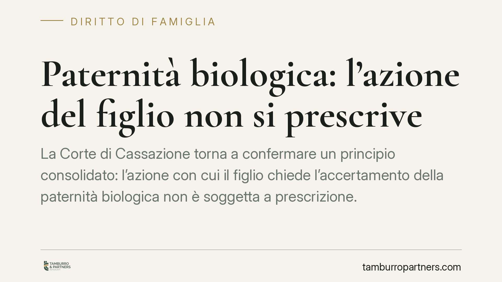

Paternità biologica: l'azione del figlio non si prescrive
La Corte di Cassazione torna a confermare un principio consolidato: l'azione con cui il figlio chiede l'accertamento della paternità biologica non è soggetta a prescrizione. E il rifiuto ingiustificato di sottoporsi al test del DNA può essere valutato dal giudice come elemento a sostegno della domanda. Vediamo cosa significa in concreto.

Il principio confermato
Una recente ordinanza della Corte di Cassazione civile ha ribadito due punti fermi in materia di accertamento della paternità biologica.
Il primo: l'azione promossa dal figlio per ottenere la dichiarazione giudiziale di paternità è imprescrittibile. Non esiste, cioè, un termine oltre il quale il figlio perde il diritto di far accertare chi sia il proprio genitore.
Il secondo: se il presunto padre si rifiuta senza giustificazione di sottoporsi al test del DNA, il giudice può trarre da quel comportamento un elemento di prova a favore della domanda.
Inquadramento normativo
La regola dell'imprescrittibilità è scritta nell'art. 270 del Codice civile. Il primo comma stabilisce che l'azione di dichiarazione giudiziale di paternità o maternità riguardo al figlio è imprescrittibile: il figlio può agire in qualsiasi momento della sua vita.
La disciplina cambia quando l'azione non è promossa dal figlio ma dai suoi eredi o discendenti. In questo caso il secondo e il terzo comma dell'art. 270 c.c. prevedono limiti temporali specifici: gli eredi possono agire solo se il figlio è morto prima di aver iniziato la causa, ed entro termini determinati. La distinzione è netta: imprescrittibilità piena per il figlio, disciplina più rigida per chi agisce dopo la sua morte.
Sul valore del rifiuto del test entra in gioco l'art. 116 del Codice di procedura civile. La norma consente al giudice di desumere argomenti di prova dal contegno delle parti nel processo. Il rifiuto di sottoporsi all'esame genetico rientra proprio in questa categoria.
Rifiuto del test: argomento di prova, non confessione
Qui serve una precisazione tecnica importante, perché è facile fraintendere.
Il rifiuto del test del DNA non equivale a un'ammissione automatica della paternità. Non è una confessione. È, più precisamente, un *argomento di prova*: un elemento che il giudice valuta insieme a tutti gli altri raccolti nel giudizio.
In pratica, chi si sottrae al test non viene condannato per ciò solo. Ma quel comportamento, unito ad altri indizi — frequentazioni, dichiarazioni, testimonianze, corrispondenza — può orientare la decisione. Più il quadro complessivo è già consistente, più pesa il rifiuto ingiustificato.
Il principio ha una logica precisa: il test del DNA è oggi lo strumento più affidabile per accertare la verità biologica. Chi lo rifiuta senza motivo priva il processo della prova decisiva, e non può poi trarre vantaggio dalla propria condotta.
Le ricadute successorie
L'accertamento della paternità non produce effetti solo sul piano dell'identità personale. Ha conseguenze patrimoniali concrete.
Una volta dichiarata giudizialmente la paternità, il figlio acquista lo status di figlio a tutti gli effetti. Ne derivano diritti successori: il figlio riconosciuto rientra tra gli eredi legittimi e ha diritto alla quota di legittima, cioè alla porzione di eredità che la legge gli riserva.
È un aspetto spesso sottovalutato. L'azione di accertamento, quando riguarda un genitore già defunto e viene rivolta contro gli eredi, incide direttamente sulla divisione del patrimonio ereditario. Da qui l'importanza di valutare con attenzione tempi e strategia.
Cosa fare in concreto
- Raccogli ogni elemento utile prima di avviare la causa: documenti, fotografie, messaggi, testimonianze che possano ricostruire il rapporto con il presunto genitore.
- Non contare solo sul test del DNA: il rifiuto altrui è un argomento di prova, non una prova automatica. Serve un quadro indiziario solido a supporto.
- Verifica la posizione processuale corretta: se il presunto padre è deceduto, l'azione va indirizzata agli eredi e valgono termini e regole diverse.
- Considera le implicazioni successorie, soprattutto se è già aperta una successione: l'accertamento della paternità può modificare le quote ereditarie.
- Rivolgiti a un professionista per una valutazione preliminare del caso, delle prove disponibili e della strategia processuale più adeguata.
In sintesi
Il diritto del figlio a conoscere la propria origine biologica non conosce scadenze. Il rifiuto del test rafforza — ma non sostituisce — le altre prove. E le conseguenze dell'accertamento vanno ben oltre l'identità personale, toccando la sfera patrimoniale ed ereditaria.
Contributo informativo a cura di Tamburro & Partners - Avv. Giuseppe Tamburro. Non costituisce parere legale.
Ogni famiglia ha il suo equilibrio.
Separazione, divorzio, affidamento, assegno: se vuoi un confronto riservato su una specifica situazione, scrivi allo studio. Ti rispondiamo entro un giorno lavorativo.